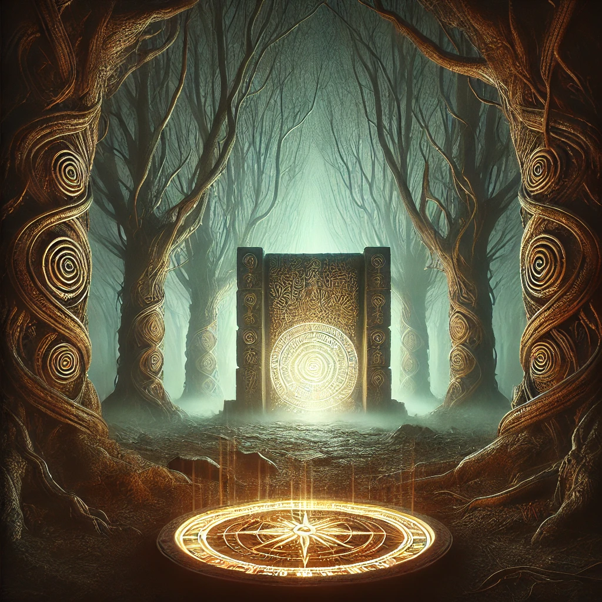

The compass glows brighter as you follow its pull deeper into the forest. The trees grow denser, their branches twisting like veins through the sky. The air grows still, and a faint vibration hums beneath your feet. Ahead, you notice an anomaly—a subtle shimmer in the air, as though the forest itself is hiding something.
You step closer, and the shimmer solidifies into the outline of a hidden gate. Its surface is carved with ancient glyphs, pulsating faintly as if alive. The compass vibrates in your hand, its needle pointing directly at the gate.
“The gate is a threshold,” whispers a voice, soft and ancient. “But every gate requires a key. What will you do?”
The gate’s presence feels both inviting and foreboding, offering a challenge as much as an opportunity.

How will you approach the hidden gate?